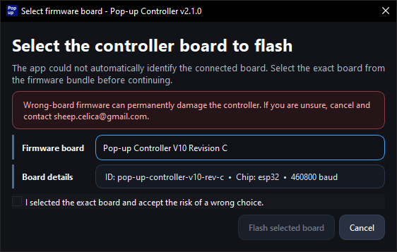
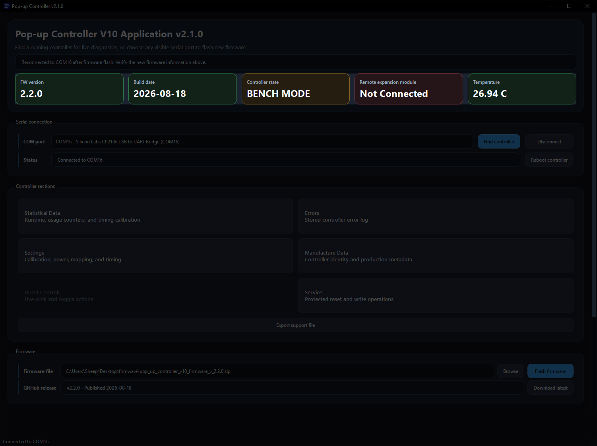

Precondition
Complete the App Setup Guide first.
Complete the App Setup Guide first.
Double-click the extracted .exe file to start the app.

Windows SmartScreen or antivirus software may warn you about the app because it is not code-signed.
The main window should open. Click Find controller.

Give the app a few seconds to detect the controller and update the device information.
If you run into detection issues here, check If the Controller Is Not Detected in the App Setup Guide.

Click the Connect button and wait until the controller is connected.
The FW version and Build date cards will become yellow if there is newer firmware available for download.

Click Download latest to automatically download and select the newest firmware file.

If needed, click Browse instead and select a firmware .zip file manually.
Open firmware release downloads if you still need to download a firmware package first.

After the firmware file has been loaded, click Flash firmware to begin the process.

When the app asks for confirmation, click Yes.

If this screen opens, you have either not connected to the controller or the controller is running firmware lower than 2.0.0. In this case, contact me first for which option to select. Selecting the wrong option may damage the controller.

After about 5 to 10 seconds, the flash should finish and a success dialog should appear.

A few seconds later, the controller should reconnect automatically. Check that the displayed information looks correct.
